Chapter 17 E-Value: Evidence for Causation in Observational Studies with Unmeasured Confounding
All the methods discussed in Part III rely crucially on the ignorability assumption. They require controlling for all confounding between the treatment and outcome. However, we cannot use the data to validate the ignorability assumption. Observational studies are often criticized due to the possibility of unmeasured confounding. The famous Yule–Simpson Paradox reviewed in Chapter 1 demonstrates that an unmeasured binary confounder can completely overturn an observed association between the treatment and outcome. However, to overturn a larger observed association, this unmeasured confounder must have a stronger association with the treatment and the outcome. In other words, not all observational studies are created equal. Some provide stronger evidence for causation than others.
The following three chapters will discuss various sensitivity analysis techniques that can quantify the evidence of causation based on observational studies in the presence of unmeasured confounding. This chapter starts with the E-value, introduced by VanderWeele and Ding, (2017) based on the theory in Ding and VanderWeele, (2016). It is more useful for observational studies using logistic regressions to estimate the conditional risk ratio of a treatment on a binary outcome. Chapter 18 discusses sensitivity analysis for the average causal effect based on outcome regression, IPW, and doubly robust estimation. Chapter 19 discusses Rosenbaum’s framework for sensitivity analysis for matched observational studies.
86 Cornfield-type sensitivity analysis
Although we do not assume ignorability given  :
:
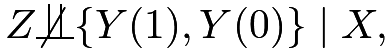 |
we still assume latent ignorability given and an unmeasured confounder  :
:
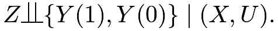 |
The technique in this chapter works the best for a binary outcome  although it can be extended to other non-negative outcomes (Ding and VanderWeele,, 2016). Focus on binary now. The true conditional causal effect on the risk ratio scale is defined as
although it can be extended to other non-negative outcomes (Ding and VanderWeele,, 2016). Focus on binary now. The true conditional causal effect on the risk ratio scale is defined as
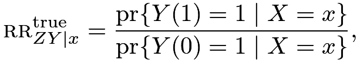 |
and the observed conditional risk ratio equals
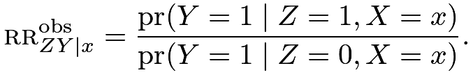 |
In general, with an unmeasured confounder , they are different:
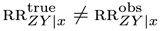 |
because
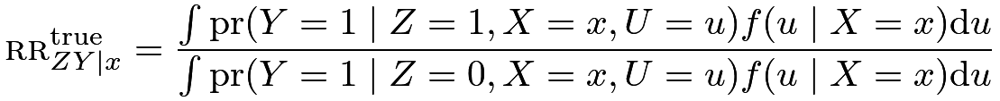 |
and
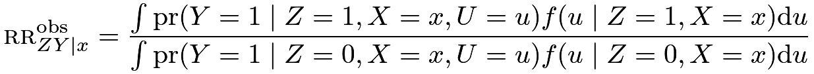 |
are averaged over different distributions of .
Historically, Doll and Hill, (1950) found that the risk ratio of cigarette smoking on lung cancer was
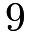
even after adjusting for many observed covariates40. Fisher, (1957) criticized their result to be noncausal because it is possible that a hidden gene simultaneously causes cigarette smoking and lung cancer although the true causal effect of cigarette smoking on lung cancer is absent. This is the common cause hypothesis, also discussed by Reichenbach, (1957). Cornfield et al., (1959) took a more constructive perspective and asked: how strong this unmeasured confounder must be to explain away the observed association between cigarette smoking and lung cancer? Below we will use Ding and VanderWeele, (2016)’s general formulation of the problem.
Consider the following causal diagram:
which conditions on . So
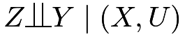
. Conditioning on and , we observe no association between  and ; but conditioning on only , we observe an association between and . Although we can allow to be general as Ding and VanderWeele, (2016), we assume that is binary to simplify the presentation.
and ; but conditioning on only , we observe an association between and . Although we can allow to be general as Ding and VanderWeele, (2016), we assume that is binary to simplify the presentation.
Define two sensitivity parameters:
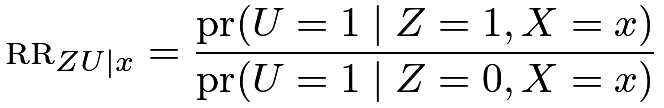 |
measures the treatment-confounder association, and
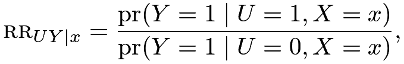 |
measures the confounder-outcome association, conditional on covariates
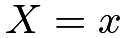
. We can show the main result below.Theorem 17.1
Under , assume
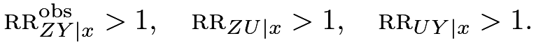 |
(85) |
We have
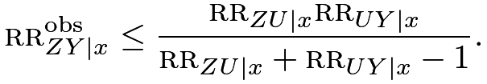 |
In Theorem 17.1, we assume (85) without loss of generality. If
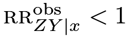
, we can relabel the treatment and control levels to ensure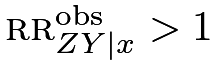
. If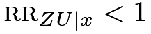
, we can redefine the unmeasured confounder as 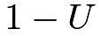
to ensure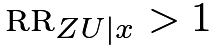
. If and , then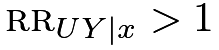
holds automatically. I relegate this subtle technical detail to Problem 17.2.Theorem 17.1 shows the upper bound of the observed risk ratio of the treatment on the outcome if the conditional independence holds. Under this conditional independence assumption, the association between the treatment and the outcome is purely due to the association between the treatment and the confounder
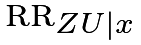
, and the association between the confounder and the outcome,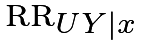
. The upper bound equals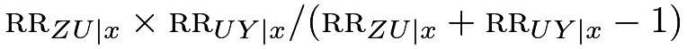
. A similar inequality appeared in Lee, (2011). It is also related to Cochran’s formula or the omitted-variable bias formula for linear models, which was reviewed in Problem 16.2.Reversely, to generate a certain value of the observed risk ratio
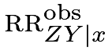
, the two confounding measures and cannot be arbitrary. Their function must be at least at large as .I will give the proof of Theorem 17.1 below.
Proof of Theorem 17.1: Define
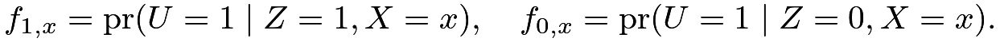 |
We can decompose as
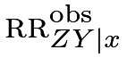 |
||||
 |
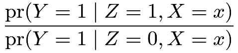 |
|||
|
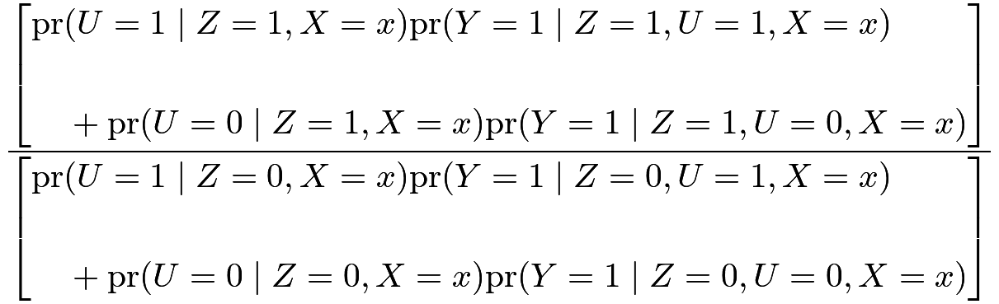 |
|||
|
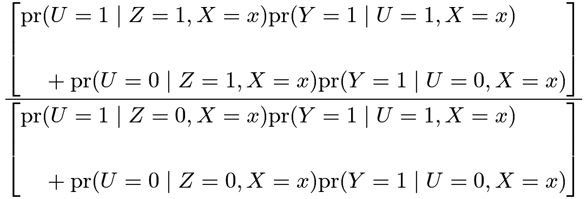 |
|||
|
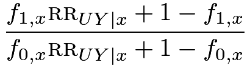 |
|||
|
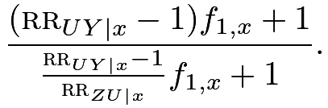 |
We can verify that is increasing in
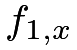
using the result in Problem 17.1. So letting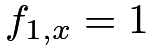
, we have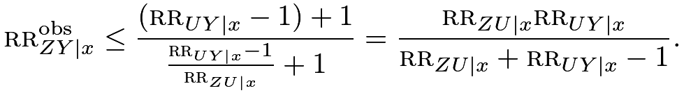 |

In the proof of Theorem 17.1, we have obtain an identity
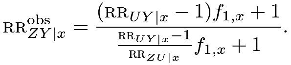 |
(88) |
But this identity involves three parameters
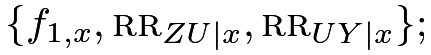 |
see Problem 17.4 for a related formula. In contrast, the upper bound in Theorem 17.1 involves only two parameters
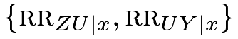 |
which measure the strength of the confounder. Mathematically, the identity 88 is stronger than the inequality in Theorem 17.1. However, 88 involves more sensitivity parameters compared with Theorem 17.1. Therefore, we face a trade-off of accuracy and convenience in sensitivity analysis.
87 E-value
Lemma 17.1 below is useful for deriving interesting corollaries of Theorem 17.1. I relegate its proof to Problem 17.3.
Lemma 17.1
Define 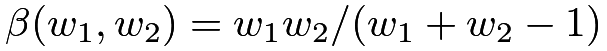 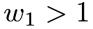 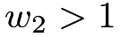
-
[(1)]
- 1.
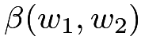
is symmetric in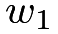
and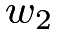
; - 2.
is increasing in both and ;
- 3.
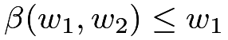
and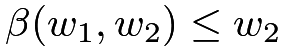
; - 4.
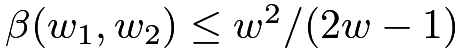
, where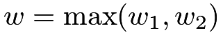
.
Using Theorem 17.1 and Lemma 17.1(3), we have
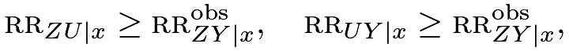 |
or, equivalently,
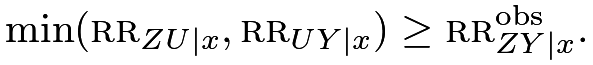 |
Therefore, to explain away the observed relative risk, both confounding measures and must be at least as large as . Cornfield et al., (1959) first derived the inequality
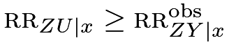
, also called the Cornfield inequality (Gastwirth et al.,, 1998). Schlesselman, (1978) derived the inequality . These are related to to the data processing inequality in information theory41.If we define , then we can use Theorem 17.1 and Lemma 17.1(4) to obtain
which is a quadratic inequality. One root is always smaller than or equal to  , so we have
, so we have
Therefore, to explain away the observed relative risk, the maximum of the confounding measures and must be at least as large as . Based on this result, VanderWeele and Ding, (2017) introduced the following notion of E-value for measuring the evidence of causation with observational studies.
Definition 17.1 (E-Value)
With the observed conditional risk ratio , define the E-Value as
The E-value is defined for the parameter . In practice, is estimated with sampling error. We can calculate the E-value based on the estimated , as well as the corresponding E-values for the lower and upper confidence limits of .
Fisher’s  -value measures the evidence for causal effects in randomized experiments. We have discussed the -value based on the FRT in Part II of this book. However, in observational studies with large sample sizes, -values can be a poor measure of evidence for causal effects. Even if the true causal effects are
-value measures the evidence for causal effects in randomized experiments. We have discussed the -value based on the FRT in Part II of this book. However, in observational studies with large sample sizes, -values can be a poor measure of evidence for causal effects. Even if the true causal effects are  , a tiny amount of unmeasured confounding can bias the estimate, which can result in extremely small -values given the small sampling uncertainty. The sampling uncertainty is usually secondary in observational studies with large sample sizes, but the uncertainty due to unmeasured confounding is often the first-order problem that does not diminish with increased sample sizes. VanderWeele and Ding, (2017) argued that the E-value is a better measure of the evidence for causal effects in observational studies.
, a tiny amount of unmeasured confounding can bias the estimate, which can result in extremely small -values given the small sampling uncertainty. The sampling uncertainty is usually secondary in observational studies with large sample sizes, but the uncertainty due to unmeasured confounding is often the first-order problem that does not diminish with increased sample sizes. VanderWeele and Ding, (2017) argued that the E-value is a better measure of the evidence for causal effects in observational studies.
88 A classic example
I revisit a classic example below.
Example 17.1
Hammond and Horn, (1958) used the U.S. population to study the cigarette smoking and lung cancer relationship. Ignoring covariates, their data can be represented by a two-by-two table below:
| Lung cancer | No lung cancer | |
|---|---|---|
| Smoker | 397 | 78557 |
| Non-smoker | 51 | 108778 |
Based on the data, they obtained an estimate of the risk ratio with a 95% confidence interval (see Section 30.C.2 for the formulas). To explain away the point estimate, the E-value is
to explain away the lower confidence limit, the E-value is
Figure 21 shows the joint values of the two confounding measures to explain away the point estimate and lower confidence limit of the risk ratio. In particular, to explain away the point estimate, they must lie in the area above the solid curve; to explain away the lower confidence limit, they must lie in the area above the dashed curve.42
The simple R code below computes the numbers in Example 17.1:
89 Extensions
89.1 E-value and Bradford Hill’s criteria for causation
The E-value provides evidence for causation. But evidence is not a proof. With a larger E-value, we need a stronger unmeasured confounder to explain away the observed risk ratio; the evidence for causation is stronger. With a smaller E-value, we need a weaker unmeasured confounder to explain away the observed risk ratio; the evidence for causation is weaker. Coupled with the discussion in Section 90.1, a larger observed risk ratio has stronger evidence for causation. This is closely related to Sir Bradford Hill’s first criterion for causation: strength of the association (Bradford Hill,, 1965). Theorem 17.1 provides a mathematical quantification of his heuristic argument.
In a famous paper, Bradford Hill, (1965) proposed a set of nine criteria to provide evidence for causation between a presumed cause and outcome.
Definition 17.2
Bradford Hill gave nine criteria for causation:
- 1.
strength;
- 2.
consistency;
- 3.
specificity;
- 4.
temporality;
- 5.
biological gradient;
- 6.
plausibility;
- 7.
coherence;
- 8.
experiment;
- 9.
analogy.
The E-value is a way to justify his first criterion. That is, stronger association often provides stronger evidence for causation because to explain away stronger association, we need stronger confounding measures. We have discussed randomized experiments in Part II, which corroborates his eighth criterion. Due to the space limit, I omit the detailed discussion of his other criteria and encourage the readers to read Bradford Hill, (1965). Recently, this paper has been re-printed as Bradford Hill, (2020) with insightful comments from many leading researchers in causal inference.
89.2 E-value after logistic regression
With a binary outcome, it is common for epidemiologists to use a logistic regression of the outcome  on the treatment indicator
on the treatment indicator  and covariates
and covariates  :
:
In the logistic model above, the coefficient of is the log of the conditional odds ratio between the treatment and the outcome given the covariates:
Importantly, the logistic model assumes a common odds ratio across all values of the covariates. Moreover, when the outcome is rare in that and are close to , the conditional odds ratio approximates the conditional risk ratio (see Proposition 1.1(3)):
Therefore, based on the estimated logistic regression coefficient and the corresponding confidence limits, we can calculate the E-value immediately. This is the leading application of the E-value.
Example 17.2
The NCHS2003.txt contains the National Center for Health Statistics birth certificate data, with the following binary indicator variables useful for us:
| PTbirth | pre-term birth |
| preeclampsia | pre-eclampsia |
| ageabove35 | an older mother with age (the treatment) |
| somecollege | college education |
| mar | marital status |
| smoking | smoking status |
| drinking | drinking status |
| hispanic | mother’s ethnicity |
| black | mother’s ethnicity |
| nativeamerican | mother’s ethnicity |
| asian | mother’s ethnicity |
This version of the data is from Valeri and Vanderweele, (2014). This example focuses on the outcome PTbirth and Problem 17.5 focuses on the outcome pre-eclampsia, a multisystem hypertensive disorder of pregnancy. The following R code computes the E-values after fitting a logistic regression. Based on the E-values, we conclude that to explain away the point estimate, the maximum confounding measure must be larger than 1.94, and to explain away the lower confidence limit, the maximum confounding measure must be larger than 1.91. Although these confounding measures are not as strong as those in Section 88, they appear to be fairly large in epidemiologic studies.
The simple R code below computes the numbers in Example 17.2:
89.3 Non-zero true causal effect
Theorem 17.1 assumes no true causal effect of the treatment on the outcome. Ding and VanderWeele, (2016) proved a general theorem allowing for a non-zero true causal effect.
Theorem 17.2
Theorem 17.1 is a special case of Theorem 17.2 with See the original paper of Ding and VanderWeele, (2016) for the proof of Theorem 17.2. Without assuming any additional assumptions, Theorem 17.2 states a lower bound of the true risk ratio given the observed risk ratio and the two sensitivity parameters and .
90 Critiques and responses
Since the original paper was published, the E-value has become a standard number reported in many epidemiologic studies. Nevertheless, it also attracted critiques (Ioannidis et al.,, 2019). I will review some limitations of E-values below.
90.1 E-value is just a monotone transformation of the risk ratio
From Figure 22, we can see that if the risk ratio is large, then the E-value is nearly which is linear in the risk ratio. For a small risk ratio, the E-value is more nonlinear in . Critics often say that the E-value is merely a monotone transformation of the point estimator or the confidence limits of the risk ratio. So it does not provide any additional information.
This is partially true. Indeed, the E-value is entirely based on the point estimator or the confidence limits of the risk ratio. However, it has a meaningful interpretation based on Theorem 17.1: to explain away the observed risk ratio, the maximum of the confounding measures must be at least as large as the E-value.
90.2 Calibration of the E-value
The E-value equals the maximum value of the association between the confounder and the treatment and that between the confounder and the outcome to completely explain away an observed association. An obvious problem is that this confounder is fundamentally latent. So it is not trivial to decide whether a certain E-value is large or small.
Another related problem is that the E-value depends on how many observed covariates we have controlled for since it quantifies the strength of the residual confounding given . Therefore, E-values across studies are not directly comparable. The E-value provides evidence for causation but this evidence should be assessed carefully based on background knowledge of the problem of interest.
The following leave-one-covariate-out approach is an intuitive approach to calibrating the E-value. With  , we can pretend that the component were not observed and compute the - and - risk ratios given other observed covariates
, we can pretend that the component were not observed and compute the - and - risk ratios given other observed covariates  . These risk ratios provide the range for the confounding measures due to if we believe that the unmeasured is not as strong as some of the observed covariates. However, I am not aware of any formal justification for this approach.
. These risk ratios provide the range for the confounding measures due to if we believe that the unmeasured is not as strong as some of the observed covariates. However, I am not aware of any formal justification for this approach.
90.3 It works the best for a binary outcome and the risk ratio
Theorem 17.1 works well for a binary outcome and the risk ratio. Ding and VanderWeele, (2016) also proposed sensitivity analysis methods for other causal parameters, including the risk difference for binary outcomes, the mean ratio for non-negative outcomes, and the hazard ratio for survival outcomes. However, they are not as elegant as the E-value for binary outcomes based on the risk ratio. The next chapter will propose a simple sensitivity analysis method for the average causal effect that can include the outcome regression, IPW, and doubly robust estimators in Part III as special cases.
91 Homework Problems
17.1 A technical lemma for the proof of Theorem 17.1
Show that
is increasing in  if and decreasing in is .
if and decreasing in is .
17.2 Technical assumption for Theorem 17.1
Revisit the proof of Theorem 17.1. Assume . Show that if but , then .
Remark:
This result is intuitive. Condition on It says that if the - relationship is positive and the - relationship is negative, then the - relationship is negative given the conditional independence of and given .
Based on this result, if we assume and , then must be true.
Therefore, the third condition in (85) is in fact redundant.
17.3 Lemma 17.1
Prove Lemma 17.1.
17.4 Schlesselman, (1978)’s formula
For simplicity, we condition on implicitly in this problem.
Consider a binary treatment , outcome , and unmeasured confounder .
Assume a common risk ratio of the treatment on the outcome within both and :
and also a common risk ratio of the confounder on the outcome within both  and
and  :
:
Show that
Remark: First verify that if then
This identity shows the collapsibility of the risk ratio. In epidemiology, the risk ratio is a collapsible measure of association.
Schlesselman, (1978)’s formula does not assume conditional independence , but assumes homogeneity of the - and - risk ratios. It is a classic formula for sensitivity analysis. It is an identity that is simple to implement with pre-specified
However, it involves more sensitivity parameters than Theorem 17.1. Even though Theorem 17.1 only gives an inequality, it is not a loose inequality compared to Schlesselman, (1978)’s formula under stronger assumptions. With Theorem 17.1, Schlesselman, (1978)’s formula is only of historical interest.
17.5 E-value after logistic regression: data analysis
This problem uses the same dataset as Example 17.2.
Report the E-value for the outcome preeclampsia.
17.6 Cornfield-type inequalities for the risk difference
Consider binary , and condition on implicitly. Assume latent ignorability given . Show that under , we have
| (89) |
where is the observed risk difference of on , and and are the treatment-confounder and confounder-outcome risk differences, respectively (recall the definition of the risk difference in Chapter 2.2).
Remark: Without loss of generality, assume that are all positive. Then (89) implies that
and
These are the Cornfield inequalities for the risk difference with a binary confounder. They show that for an unmeasured confounder to explain away an observed risk difference , the treatment-confounder and confounder-outcome risk differences must both be larger than , and the maximum of them must be larger than the square root of .
Cornfield et al., (1959) obtained, but did not appreciate the significance of (89). Gastwirth et al., (1998) and Poole, (2010) discussed the first Cornfield condition for the risk difference, and Ding and VanderWeele, (2014) discussed the second.
Ding and VanderWeele, (2014) also derived more general results without assuming a binary . Unfortunately, the results for a general are weaker than those above for a binary , that is, the inequalities become looser with more levels of . This motivated Ding and VanderWeele, (2016) to focus on the Cornfield inequalities for the risk ratio, which do not deteriorate with more levels of .
17.7 Recommended reading
Ding and VanderWeele, (2016) extended and unified the Cornfield-type sensitivity analysis, which is the theoretical basis for the notion of E-value.
脚注
40. Their original analysis was based on a case-control study and estimated the odds ratio of cigarette smoking on lung cancer. But the risk ratio is close to the odds ratio since lung cancer is a rare outcome; see Proposition 1.1.
41. In information theory, the mutual information
measures the dependence between two random variables  and
and  , where denotes the joint or marginal density of . The data processing inequality is a famous result: if , then and .
Lihua Lei and Bin Yu both pointed out to me the connection between Cornfield’s inequality and the data processing inequality.
, where denotes the joint or marginal density of . The data processing inequality is a famous result: if , then and .
Lihua Lei and Bin Yu both pointed out to me the connection between Cornfield’s inequality and the data processing inequality.
42. Based on some simple algebra, the solid curve and dashed curve are both hyperbolas.